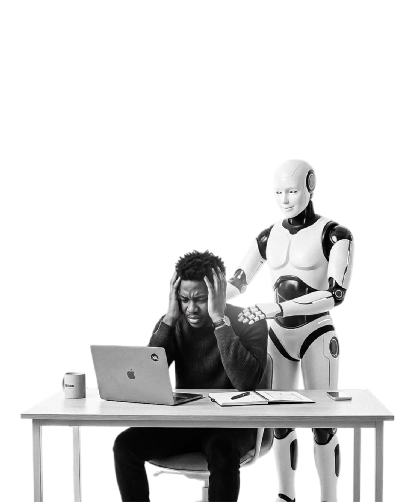
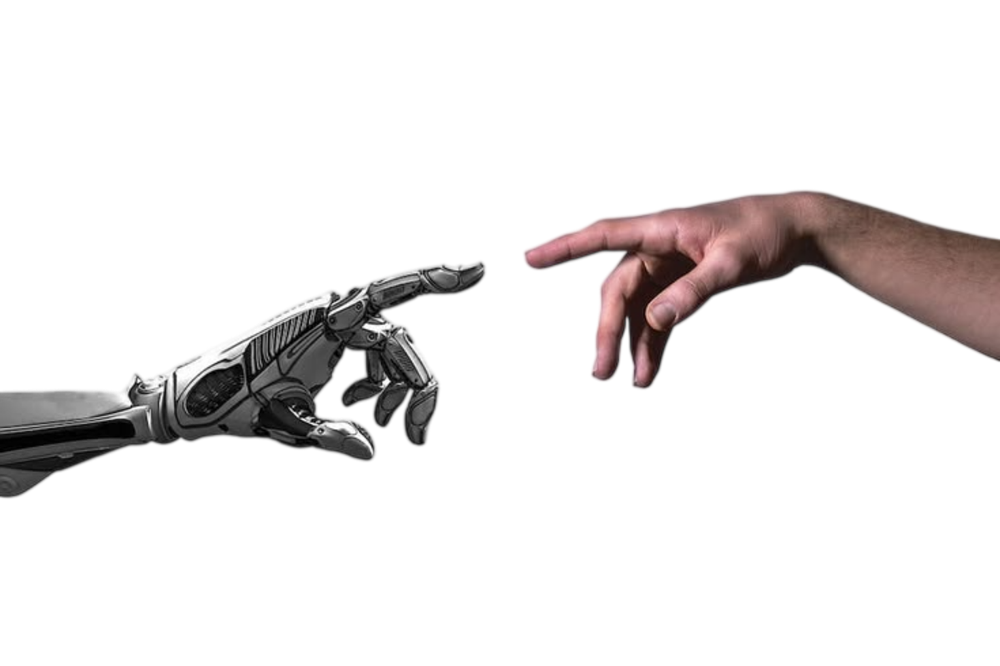

El problema
no es tu equipo.
Es seguir haciendo todo a mano.
Automatizá lo repetitivo
Agencia de IA
aicia

Es seguir haciendo todo a mano.

Agentes de IA, automatizaciones, webs y apps a medida.
Mientras todos hacen lo mismo, vos das el paso.